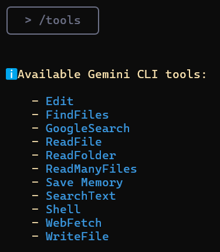

Gemini CLI: היכרות וצעדים ראשונים.
Gemini CLI הוא כלי הפועל ישירות בטרמינל שלך, מבין את בסיס הקוד שלך ועוזר לתקן שגיאות באמצעות שאילתות בשפה טבעית. זוהי התשובה של גוגל ל-Claude Code של Anthropic.
אתה יכול להשתמש ב-Gemini 2.5 Pro (הכלי יעבור ל-Gemini 2.5 Flash אם תגיע למגבלה) ובחלון ההקשר שלו של מיליון אסימונים כדי לבצע עד 60 בקשות לדקה ו-1000 בקשות ביום, והכל בחינם.
תוכן
- הבנה וניווט בבסיסי קוד גדולים
- איתור ותיקון באגים
- כתיבת ובדיקת קוד
- כלי Gemini CLI
- שילוב Google CLI עם MCP
תכונות עיקריות של Gemini CLI:
- עריכה וריפקטורינג: משפר ומפשט אוטומטית את הקוד שלך בהנחיית AI.
- איתור ותיקון באגים: מוצא באגים ומציע תיקונים.
- הבנת קוד: Gemini CLI יכול לסכם ארכיטקטורה, להסביר תפקידי מודולים או לבנות מפות זרימת ביצוע.
- יצירת בדיקות: יוצר אוטומטית מקרי בדיקה עבור `pytest`
- תמיכה בתיעוד: אתה יכול ליצור מסמכי Markdown מובנים, יומני שינויים (changelogs) ולהגיב לבעיות GitHub ישירות בטרמינל.
- ביצוע פקודות: Gemini CLI יכול לבצע פקודות מעטפת כגון `git`, `npm`, `pip` ואחרות, מה שמאפשר לך לנהל פרויקטים מבלי לצאת מה-CLI.
שלב 1: דרישות קדם
כדי להתחיל, התקן את Node.js (גרסה 18 ומעלה). תוכל להוריד את המתקין לבחירתך או להריץ את פקודות ה-bash הבאות בטרמינל שלך:
# הורדה והתקנה של nvm (Node Version Manager):
curl -o- https://raw.githubusercontent.com/nvm-sh/nvm/v0.40.3/install.sh | bash
# אתחול nvm בסשן הטרמינל הנוכחי
. "$HOME/.nvm/nvm.sh"
# הורדה והתקנה של Node.js (לדוגמה, גרסה 22):
nvm install 22
# בדיקת גרסת Node.js:
node -v # אמור להציג "v22.17.0" או דומה
# בדיקת גרסת npm:
npm -v # אמור להציג "10.9.2" או דומה
⚠️ חשוב למשתמשי Windows:
הפקודה `nvm` לעיל מיועדת ל-Linux/macOS ו-לא תעבוד ב-PowerShell או cmd.exe.
עבור Windows, השתמש ב-[nvm-windows](https://github.com/coreybutler/nvm-windows), הורד את `nvm-setup.exe` מהמקטע [Releases](https://github.com/coreybutler/nvm-windows/releases).
לחלופין, תוכל להתקין WSL (Windows Subsystem for Linux) ולהריץ את הפקודות ב-Ubuntu או בהפצת לינוקס אחרת.
שלב 2: הגדרת Gemini CLI
שלב 2.1: התקנת Gemini CLI
לאחר ש-Node.js ו-npm מותקנים ונבדקו, התקן את Gemini CLI על ידי הפעלת הפקודה הבאה בטרמינל שלך:
npx https://github.com/google-gemini/gemini-cli
או השתמש ב-`npm` להתקנה גלובלית:
npm install -g @google/gemini-cli
gemini
לאחר ההתקנה, הקלד `gemini` בטרמינל שלך כדי לגשת לכלי.
שלב 2.2: אימות
אתה יכול להשתמש בחשבון Google האישי שלך לאימות. זה ייתן לך עד 60 בקשות לדקה ו-1000 בקשות ביום בעת שימוש ב-Gemini.

במדריך זה, השתמשתי ב-**כניסה באמצעות Google**, אך תוכל גם להשתמש ב-**מפתח API** (מוגדר כמשתנה סביבה או בקובץ `.env`) או באימות **Vertex AI**.
כדי ליצור מפתח API חדש, היכנס ל-**AI Studio** עם חשבון Google שלך ולחץ על "צור מפתח API".
```bash
# הגדרת מפתח כמשתנה סביבה
export GEMINI_API_KEY="Your_API_Key"
# או צור קובץ .env
GEMINI_API_KEY="Your_API_Key"
```
תוכל להשתמש בפקודה `/auth` בשדה הטקסט כדי להחליף שיטות אימות לפי הצורך.
---
### שלב 3: הגדרת פרויקט ב-Gemini CLI

לאחר שה-CLI פועל, נוכל להתחיל לתקשר עם Gemini מהטרמינל. ישנן שתי דרכים לעבוד עם פרויקט.
#### 1. התחלת פרויקט חדש
כדי להתחיל פרויקט מאפס, הפעל את הפקודות הבאות:
```bash
cd new-project/
gemini
```
בתוך ה-CLI, השתמש בהנחיה כדי לפתור את הבעיה שמעניינה אותך, לדוגמה:
> כתוב את קוד המקודד עבור טרנספורמר מאפס.

הענק הרשאה לכתיבת קבצים:

#### 2. עבודה עם פרויקט קיים
אם כבר יש לך בסיס קוד, תוכל לעבוד איתו על ידי הפעלת הפקודות הבאות:
```bash
git clone https://github.com/AashiDutt/Google-Agent-Development-Kit-Demo
cd Google-Agent-Development-Kit-Demo
gemini
```
בתוך ה-CLI, השתמש בהנחיה, לדוגמה:
> ספק לי סיכום של כל השינויים שבוצעו בבסיס הקוד בחודש האחרון.
---
### שלב 4: התנסות עם Gemini CLI
לדוגמה, אשתמש בפרויקט **[מתכנן נסיעות מבוסס ADK 🌍🛫](https://github.com/AashiDutt/Google-Agent-Development-Kit-Demo)**.
עם Gemini CLI, אראה כיצד:
1. לחקור את בסיס הקוד
2. לאתר באג או בעיה ב-GitHub או בקובץ
3. לבצע ריפקטורינג לקוד וליצור בדיקות יחידה
4. ליצור דוח Markdown של השינויים שבוצעו
5. להמחיש את בסיס הקוד על ידי יצירת תרשים זרימה
#### חקירה והבנת בסיס הקוד
נתחיל בבקשה מ-Gemini לחקור ולהסביר את בסיס הקוד.
**הנחיה:** `חקור את התיקיה הנוכחית ותאר את ארכיטקטורת הפרויקט.`
Gemini CLI יחזיר סיכום מובנה המסביר את הארכיטקטורה:
* **ממשק משתמש:** יישום Streamlit (`travel_ui.py`) מספק ממשק לאינטראקציה.
* **תזמור:** `host_agent` פועל כרכז מרכזי.
* **סוכנים מיוחדים:** `flight_agent`, `stay_agent`, `activities_agent` לחיפוש טיסות, מלונות ופעילויות.
* **תקשורת:** סוכנים מתקשרים זה עם זה באמצעות RESTful API של FastAPI.
* **רכיבים משותפים:** `shared/schemas.py` מגדיר מבני נתונים נפוצים.
זה יעזור לך לנווט מבלי לקרוא כל קובץ ידנית.
#### ניתוח ותיקון בעיית GitHub
בואו נחקור כמה בעיות פתוחות ממאגר GitHub.
**הנחיה:** `הנה בעיית GitHub: [@search https://github.com/AashiDutt/Google-Agent-Development-Kit-Demo/issues/1]. נתח את בסיס הקוד והצע תוכנית תיקון בת 3 שלבים. אילו קבצים/פונקציות יש לשנות?`
Gemini CLI חקר את הבעיה:
* באמצעות פונקציית `@search`, הוא אחזר נתונים מ-GitHub.
* זיהה את שורש הבעיה כשגיאת סריאליזציה של JSON (במקרה זה, הפונקציה האסינכרונית `create_session()` לא נקראה עם `await`).
* הציע שינויים וטיפול בתגובה במספר קבצים.
לאחר מכן, ה-CLI ממתין לקלט משתמש כדי להעריך את השינויים. אם המשתמש מסכים, הוא יחיל את השינויים המוצעים.
#### יישום ובדיקת התיקון
כעת ניישם ונבדוק את התיקונים שהוצעו על ידי Gemini.
**הנחיה:** `כתוב בדיקת יחידה עבור שינוי זה ב-pytest בקובץ test_shared.py.`
Gemini CLI:
* הכניס `json.dumps()` לפני שליחת מטען המשימה.
* יצר `test_agents.py` כדי להוסיף בדיקות יחידה.
* הוסיף מקרה בדיקה חדש כדי לבדוק את הסכימה ולהעביר הודעות סוכן מקוננות.
#### יצירת תיעוד
כעת, לאחר שהתיקונים הוחלו, נסכם את השינויים ונכתוב אותם ב-Markdown בקובץ `.txt`.
**הנחיה:** `כתוב סיכום Markdown של הבאג, התיקון וכיסוי הבדיקות. עצב אותו כרשומה ביומן שינויים תחת גרסה "v0.2.0".`
לאחר מכן, כדי לשמור את הסיכום במסמך, השתמשתי בהנחיה הבאה:
**הנחיה:** `שמור סיכום זה בקובץ .txt וקרא לו summary.txt`
Gemini CLI משתמש בכלי `WriteFile` כדי לשמור את הקובץ `summary.txt` בתיקיית הפרויקט.
#### יצירת תרשים זרימה באמצעות MCP
סעיף זה מרחיב ניסויים קודמים שבהם אני בוחן כיצד Gemini CLI משתמש ב-**Model Context Protocol (MCP)** כדי לשמור סיכומים ברמת הקובץ והיסטוריית משימות בין הנחיות. זה נותן ל-Gemini "זיכרון עבודה" בתוך סשן.
**הנחיה:** `צור תרשים זרימה המראה כיצד סוכנים מתקשרים באמצעות A2A (סוכן-לסוכן) וכיצד main.py מנהל את המערכת. הדגש היכן התרחשה הבעיה וכיצד היא תוקנה.`
הדמיה זו התאפשרה הודות לזיכרון המתמשך של Gemini, ששמר את ההקשר המלא של תיקון הבאגים הקודם שלנו ומבנה הסוכן ללא צורך בטעינה מחדש של קבצים.
### כלי Gemini CLI זמינים
קריאה לפקודה `/tools` ב-Gemini CLI תציג רשימה של כלים זמינים שניתן להשתמש בהם לביצוע משימות שונות, כגון עריכת קוד, יצירת בדיקות, יצירת תיעוד ועוד.

**ReadFolder (ls)**
מפרט קבצים ותיקיות בספרייה — בדומה לפקודת `ls` בשורת הפקודה.
**ReadFile (read-file)**
קורא את התוכן המלא של קובץ בודד, שימושי ליצירת סיכומים או ניתוח.
**ReadManyFiles (read-many-files)**
קורא מספר קבצים בו-זמנית, בדרך כלל לפי תבנית (לדוגמה, כל קבצי `.js`).
**FindFiles (glob)**
מחפש קבצים לפי תבנית (לדוגמה, מצא את כל קבצי `config.json` בפרויקט שלך).
**SearchText (grep)**
מחפש טקסט בתוך קבצים, לדוגמה, כדי למצוא את כל ההערות `TODO`.
**Edit (edit)**
מחיל שינויים בקוד באמצעות `diff`. Gemini מציג תצוגה מקדימה של העריכות ומבקש אישור לפני החלתן.
**WriteFile (write-file)**
יוצר קבצים חדשים (לדוגמה, `README.md`) עם תוכן המסופק על ידי המשתמש.
**Shell (shell)**
מבצע פקודות ישירות בטרמינל אם אתה מוסיף לפניהן קידומת `!` (לדוגמה, `!npm test`).
**WebFetch (web-fetch)**
מוריד תוכן מהאינטרנט (HTML או JSON), ומאפשר ל-Gemini לנתח נתונים חיצוניים.
**GoogleSearch (web-search)**
מבצע חיפוש ב-Google כדי לבסס תשובות על מידע אמיתי (לדוגמה, כדי למצוא הסבר לשגיאה).
**Save Memory (memoryTool)**
שומר עובדות או העדפות במהלך סשן (לדוגמה, "אני מעדיף async/await") כדי לשפר את העקביות והקוהרנטיות של התגובות.
### תכונות מתקדמות
אתה יכול להוסיף הוראות מיוחדות ל-AI עבור פרויקט ספציפי על ידי
יצירת קובץ `GEMINI.md` בתיקיית השורש של הפרויקט שלך.
בתוך קובץ זה, תוכל להגדיר כללי פרויקט,
סגנונות קוד וכלים שהסוכן צריך להשתמש בהם. זה מבטיח שהקוד שנוצר תואם את תקני הפרויקט שלך.
[דוגמה להוראת מערכת](https://github.com/hypo69/hypotez/blob/master/src/endpoints/hypo69/code_assistant/instructions/CODE_RULES.EN.MD)
### שילוב Google CLI עם MCP
עבור רוב המשימות היומיומיות, הכלים המובנים יספיקו. אבל מה אם אתה רוצה ש-Gemini CLI יעשה משהו מאוד מיוחד, כמו אינטראקציה עם ממשקי API ספציפיים או שימוש במודל מיוחד (לדוגמה, מחולל תמונות או כלי ניתוח אבטחה)? כאן נכנס לתמונה MCP (Model Context Protocol).
בעיקרו של דבר, MCP הוא תקן פתוח המאפשר למפתחים להוסיף כלים ויכולות חדשות ל-AI על ידי הפעלת שרת שה-CLI יכול לתקשר איתו. ב-Gemini CLI, תוכל להגדיר "שרתי MCP" בקובץ הגדרות JSON, וה-CLI יתייחס אליהם כאל כלים נוספים שהוא יכול להשתמש בהם.
#### כיצד להגדיר שרת MCP ב-Google CLI
לדוגמה, אראה לך כיצד להגדיר שרת MCP עבור GitHub ב-Gemini CLI.
בתוך תיקיית הפרויקט שלך, צור תיקיה באמצעות הפקודה:
```bash
mkdir -p .gemini && touch .gemini/settings.json
```
מלא את הקובץ בקוד זה:
```json
{
"mcpServers": {
"github": {
"command": "npx",
"args": ["-y", "@modelcontextprotocol/server-github"],
"env": { "GITHUB_PERSONAL_ACCESS_TOKEN": "[YOUR-TOKEN]" }
}
}
}
```
[הוראות כיצד לקבל אסימון](https://docs.github.com/en/authentication/keeping-your-account-and-data-secure/managing-your-personal-access-tokens#creating-a-personal-access-token-classic)
לאחר מכן, הקלד `/quit` ב-Gemini CLI כדי לצאת, ולאחר מכן פתח אותו שוב.
תראה ששרת ה-MCP של GitHub פועל ומוכן לשימוש.

הקלד את הפקודה `/mcp`, ותראה רשימה של כלי GitHub.